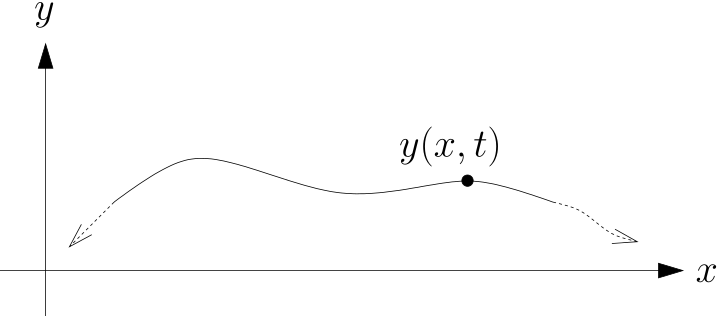
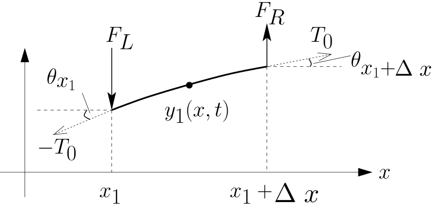

Deriving Equation of Motion
Parameters:
Assumptions:
Deriving Equation of Motion
Transverse Motion
Deriving Equation of Motion
Inifinite String
Deriving the Equation of Motion
Deriving the Equation of Motion
Deriving the Equation of Motion
\[\begin{aligned} \require{color} \rho \Delta x \frac{\partial^2y}{\partial t^2} &= T_0\frac{\partial y}{\partial x}\bigg\vert_{x_1 + \Delta x} - T_0\frac{\partial y}{\partial x}\bigg\vert_{x_1} \\ \color{#00000000}\rho\frac{\partial^2y}{\partial t^2}&= \color{#00000000}T_0\frac{\left(\frac{\partial y}{\partial x}\bigg\vert_{x_1 + \Delta x} - \frac{\partial y}{\partial x}\bigg\vert_{x_1}\right)}{\Delta x}\\ &= \color{#00000000}T_0\frac{\left(\frac{\partial y}{\partial x}\bigg\vert_{x_1 + \Delta x} - \frac{\partial y}{\partial x}\bigg\vert_{x_1}\right)}{\Delta x} \quad; \frac{dy}{dx} = \lim\limits_{h \to 0} \frac{y(x + h) - y(x)}{h} \\ &= \color{#00000000}T_0\frac{d}{dx}\frac{\partial y(x_1)}{\partial x} \Rightarrow \frac{\partial^2 y(x_1)}{\partial x^2}\\ \color{#00000000}\frac{\partial^2y}{\partial t^2} &= \color{#00000000}c^2\frac{\partial^2 y(x_1)}{\partial x^2} \quad ; \quad c = \sqrt{\frac{T_0}{\rho}} \\ \end{aligned} \]
Deriving the Equation of Motion
\[\begin{aligned} \require{color} \rho \Delta x \frac{\partial^2y}{\partial t^2} &= T_0\frac{\partial y}{\partial x}\bigg\vert_{x_1 + \Delta x} - T_0\frac{\partial y}{\partial x}\bigg\vert_{x_1} \\ \rho\frac{\partial^2y}{\partial t^2}&= T_0\frac{\left(\frac{\partial y}{\partial x}\bigg\vert_{x_1 + \Delta x} - \frac{\partial y}{\partial x}\bigg\vert_{x_1}\right)}{\Delta x}\\ &= \color{#00000000}T_0\frac{\left(\frac{\partial y}{\partial x}\bigg\vert_{x_1 + \Delta x} - \frac{\partial y}{\partial x}\bigg\vert_{x_1}\right)}{\Delta x} \quad; \frac{dy}{dx} = \lim\limits_{h \to 0} \frac{y(x + h) - y(x)}{h} \\ &= \color{#00000000}T_0\frac{d}{dx}\frac{\partial y(x_1)}{\partial x} \Rightarrow \frac{\partial^2 y(x_1)}{\partial x^2}\\ \color{#00000000}\frac{\partial^2y}{\partial t^2} &= \color{#00000000}c^2\frac{\partial^2 y(x_1)}{\partial x^2} \quad ; \quad c = \sqrt{\frac{T_0}{\rho}} \\ \end{aligned} \]
Deriving the Equation of Motion
\[\begin{aligned} \require{color} \rho \Delta x \frac{\partial^2y}{\partial t^2} &= T_0\frac{\partial y}{\partial x}\bigg\vert_{x_1 + \Delta x} - T_0\frac{\partial y}{\partial x}\bigg\vert_{x_1} \\ \rho\frac{\partial^2y}{\partial t^2}&= T_0\frac{\left(\frac{\partial y}{\partial x}\bigg\vert_{x_1 + \Delta x} - \frac{\partial y}{\partial x}\bigg\vert_{x_1}\right)}{\Delta x}\\ &= T_0\frac{\left(\frac{\partial y}{\partial x}\bigg\vert_{x_1 + \Delta x} - \frac{\partial y}{\partial x}\bigg\vert_{x_1}\right)}{\Delta x} \color{#00000000}\quad; \frac{dy}{dx} = \lim\limits_{h \to 0} \frac{y(x + h) - y(x)}{h} \\ &= \color{#00000000}T_0\frac{d}{dx}\frac{\partial y(x_1)}{\partial x} \Rightarrow \frac{\partial^2 y(x_1)}{\partial x^2}\\ \color{#00000000}\frac{\partial^2y}{\partial t^2} &= \color{#00000000}c^2\frac{\partial^2 y(x_1)}{\partial x^2} \quad ; \quad c = \sqrt{\frac{T_0}{\rho}} \\ \end{aligned} \]
Deriving the Equation of Motion
\[\begin{aligned} \require{color} \rho \Delta x \frac{\partial^2y}{\partial t^2} &= T_0\frac{\partial y}{\partial x}\bigg\vert_{x_1 + \Delta x} - T_0\frac{\partial y}{\partial x}\bigg\vert_{x_1} \\ \rho\frac{\partial^2y}{\partial t^2}&= T_0\frac{\left(\frac{\partial y}{\partial x}\bigg\vert_{x_1 + \Delta x} - \frac{\partial y}{\partial x}\bigg\vert_{x_1}\right)}{\Delta x}\\ &= T_0\frac{\left(\frac{\partial y}{\partial x}\bigg\vert_{x_1 + \Delta x} - \frac{\partial y}{\partial x}\bigg\vert_{x_1}\right)}{\Delta x} \quad; \frac{dy}{dx} = \lim\limits_{h \to 0} \frac{y(x + h) - y(x)}{h} \\ &= \color{#00000000}T_0\frac{d}{dx}\frac{\partial y(x_1)}{\partial x} \Rightarrow \frac{\partial^2 y(x_1)}{\partial x^2}\\ \color{#00000000}\frac{\partial^2y}{\partial t^2} &= \color{#00000000}c^2\frac{\partial^2 y(x_1)}{\partial x^2} \quad ; \quad c = \sqrt{\frac{T_0}{\rho}} \\ \end{aligned} \]
Deriving the Equation of Motion
\[\begin{aligned} \require{color} \rho \Delta x \frac{\partial^2y}{\partial t^2} &= T_0\frac{\partial y}{\partial x}\bigg\vert_{x_1 + \Delta x} - T_0\frac{\partial y}{\partial x}\bigg\vert_{x_1} \\ \rho\frac{\partial^2y}{\partial t^2}&= T_0\frac{\left(\frac{\partial y}{\partial x}\bigg\vert_{x_1 + \Delta x} - \frac{\partial y}{\partial x}\bigg\vert_{x_1}\right)}{\Delta x}\\ &= T_0\frac{\left(\frac{\partial y}{\partial x}\bigg\vert_{x_1 + \Delta x} - \frac{\partial y}{\partial x}\bigg\vert_{x_1}\right)}{\Delta x} \quad; \frac{dy}{dx} = \lim\limits_{\Delta x \to 0} \frac{\frac{\partial y(x_1 + \Delta x)}{\partial x} - \frac{\partial y(x_1)}{\partial x}}{\Delta x} \\ &= \color{#00000000}T_0\frac{d}{dx}\frac{\partial y(x_1)}{\partial x} \Rightarrow \frac{\partial^2 y(x_1)}{\partial x^2}\\ \color{#00000000}\frac{\partial^2y}{\partial t^2} &= \color{#00000000}c^2\frac{\partial^2 y(x_1)}{\partial x^2} \quad ; \quad c = \sqrt{\frac{T_0}{\rho}} \\ \end{aligned} \]
Deriving the Equation of Motion
\[\begin{aligned} \require{color} \rho \Delta x \frac{\partial^2y}{\partial t^2} &= T_0\frac{\partial y}{\partial x}\bigg\vert_{x_1 + \Delta x} - T_0\frac{\partial y}{\partial x}\bigg\vert_{x_1} \\ \rho\frac{\partial^2y}{\partial t^2}&= T_0\frac{\left(\frac{\partial y}{\partial x}\bigg\vert_{x_1 + \Delta x} - \frac{\partial y}{\partial x}\bigg\vert_{x_1}\right)}{\Delta x}\\ &= T_0\frac{\left(\frac{\partial y}{\partial x}\bigg\vert_{x_1 + \Delta x} - \frac{\partial y}{\partial x}\bigg\vert_{x_1}\right)}{\Delta x} \quad; \frac{dy}{dx} = \lim\limits_{\Delta x \to 0} \frac{\frac{\partial y(x_1 + \Delta x)}{\partial x} - \frac{\partial y(x_1)}{\partial x}}{\Delta x} \\ &= T_0\frac{d}{dx}\frac{\partial y(x_1)}{\partial x} \color{#00000000}\Rightarrow \frac{\partial^2 y(x_1)}{\partial x^2}\\ \color{#00000000}\frac{\partial^2y}{\partial t^2} &= \color{#00000000}c^2\frac{\partial^2 y(x_1)}{\partial x^2} \quad ; \quad c = \sqrt{\frac{T_0}{\rho}} \\ \end{aligned} \]
Deriving the Equation of Motion
\[\begin{aligned} \require{color} \rho \Delta x \frac{\partial^2y}{\partial t^2} &= T_0\frac{\partial y}{\partial x}\bigg\vert_{x_1 + \Delta x} - T_0\frac{\partial y}{\partial x}\bigg\vert_{x_1} \\ \rho\frac{\partial^2y}{\partial t^2}&= T_0\frac{\left(\frac{\partial y}{\partial x}\bigg\vert_{x_1 + \Delta x} - \frac{\partial y}{\partial x}\bigg\vert_{x_1}\right)}{\Delta x}\\ &= T_0\frac{\left(\frac{\partial y}{\partial x}\bigg\vert_{x_1 + \Delta x} - \frac{\partial y}{\partial x}\bigg\vert_{x_1}\right)}{\Delta x} \quad; \frac{dy}{dx} = \lim\limits_{\Delta x \to 0} \frac{\frac{\partial y(x_1 + \Delta x)}{\partial x} - \frac{\partial y(x_1)}{\partial x}}{\Delta x} \\ &= T_0\frac{d}{dx}\frac{\partial y(x_1)}{\partial x} \Rightarrow \frac{\partial^2 y(x_1)}{\partial x^2}\\ \color{#00000000}\frac{\partial^2y}{\partial t^2} &= \color{#00000000}c^2\frac{\partial^2 y(x_1)}{\partial x^2} \quad ; \quad c = \sqrt{\frac{T_0}{\rho}} \\ \end{aligned} \]
Deriving the Equation of Motion
\[\begin{aligned} \require{color} \rho \Delta x \frac{\partial^2y}{\partial t^2} &= T_0\frac{\partial y}{\partial x}\bigg\vert_{x_1 + \Delta x} - T_0\frac{\partial y}{\partial x}\bigg\vert_{x_1} \\ \rho\frac{\partial^2y}{\partial t^2}&= T_0\frac{\left(\frac{\partial y}{\partial x}\bigg\vert_{x_1 + \Delta x} - \frac{\partial y}{\partial x}\bigg\vert_{x_1}\right)}{\Delta x}\\ &= T_0\frac{\left(\frac{\partial y}{\partial x}\bigg\vert_{x_1 + \Delta x} - \frac{\partial y}{\partial x}\bigg\vert_{x_1}\right)}{\Delta x} \quad; \frac{dy}{dx} = \lim\limits_{\Delta x \to 0} \frac{\frac{\partial y(x_1 + \Delta x)}{\partial x} - \frac{\partial y(x_1)}{\partial x}}{\Delta x} \\ &= T_0\frac{\partial^2 y(x_1)}{\partial x^2} \\ \color{#00000000}\frac{\partial^2y}{\partial t^2} &= \color{#00000000}c^2\frac{\partial^2 y(x_1)}{\partial x^2} \quad ; \quad c = \sqrt{\frac{T_0}{\rho}} \\ \end{aligned} \]
Deriving the Equation of Motion
\[\begin{aligned} \require{color} \rho \Delta x \frac{\partial^2y}{\partial t^2} &= T_0\frac{\partial y}{\partial x}\bigg\vert_{x_1 + \Delta x} - T_0\frac{\partial y}{\partial x}\bigg\vert_{x_1} \\ \rho\frac{\partial^2y}{\partial t^2}&= T_0\frac{\left(\frac{\partial y}{\partial x}\bigg\vert_{x_1 + \Delta x} - \frac{\partial y}{\partial x}\bigg\vert_{x_1}\right)}{\Delta x}\\ &= T_0\frac{\left(\frac{\partial y}{\partial x}\bigg\vert_{x_1 + \Delta x} - \frac{\partial y}{\partial x}\bigg\vert_{x_1}\right)}{\Delta x} \quad; \frac{dy}{dx} = \lim\limits_{\Delta x \to 0} \frac{\frac{\partial y(x_1 + \Delta x)}{\partial x} - \frac{\partial y(x_1)}{\partial x}}{\Delta x} \\ &= T_0\frac{\partial^2 y(x_1)}{\partial x^2} \\ \frac{\partial^2y}{\partial t^2} &= c^2\frac{\partial^2 y(x_1)}{\partial x^2} \color{#00000000}\quad ; \quad c = \sqrt{\frac{T_0}{\rho}} \\ \end{aligned} \]
Deriving the Equation of Motion
\[\begin{aligned} \require{color} \rho \Delta x \frac{\partial^2y}{\partial t^2} &= T_0\frac{\partial y}{\partial x}\bigg\vert_{x_1 + \Delta x} - T_0\frac{\partial y}{\partial x}\bigg\vert_{x_1} \\ \rho\frac{\partial^2y}{\partial t^2}&= T_0\frac{\left(\frac{\partial y}{\partial x}\bigg\vert_{x_1 + \Delta x} - \frac{\partial y}{\partial x}\bigg\vert_{x_1}\right)}{\Delta x}\\ &= T_0\frac{\left(\frac{\partial y}{\partial x}\bigg\vert_{x_1 + \Delta x} - \frac{\partial y}{\partial x}\bigg\vert_{x_1}\right)}{\Delta x} \quad; \frac{dy}{dx} = \lim\limits_{\Delta x \to 0} \frac{\frac{\partial y(x_1 + \Delta x)}{\partial x} - \frac{\partial y(x_1)}{\partial x}}{\Delta x} \\ &= T_0\frac{\partial^2 y(x_1)}{\partial x^2} \\ \frac{\partial^2y}{\partial t^2} &= c^2\frac{\partial^2 y(x_1)}{\partial x^2} \quad ; \quad c = \sqrt{\frac{T_0}{\rho}} \\ \end{aligned} \]
Deriving the Equation of Motion
\[\begin{aligned} \require{color} \rho \Delta x \frac{\partial^2y}{\partial t^2} &= T_0\frac{\partial y}{\partial x}\bigg\vert_{x_1 + \Delta x} - T_0\frac{\partial y}{\partial x}\bigg\vert_{x_1} \\ \rho\frac{\partial^2y}{\partial t^2}&= T_0\frac{\left(\frac{\partial y}{\partial x}\bigg\vert_{x_1 + \Delta x} - \frac{\partial y}{\partial x}\bigg\vert_{x_1}\right)}{\Delta x}\\ &= T_0\frac{\left(\frac{\partial y}{\partial x}\bigg\vert_{x_1 + \Delta x} - \frac{\partial y}{\partial x}\bigg\vert_{x_1}\right)}{\Delta x} \quad; \frac{dy}{dx} = \lim\limits_{\Delta x \to 0} \frac{\frac{\partial y(x_1 + \Delta x)}{\partial x} - \frac{\partial y(x_1)}{\partial x}}{\Delta x} \\ &= T_0\frac{\partial^2 y(x_1)}{\partial x^2} \\ \frac{\partial^2y}{\partial t^2} &= c^2\frac{\partial^2 y(x)}{\partial x^2} \quad ; \quad c = \sqrt{\frac{T_0}{\rho}} \\ \end{aligned} \]
Deriving the Equation of Motion
\[ \frac{\partial^2y}{\partial t^2} = c^2\frac{\partial^2 }{\partial x^2} \quad ; \quad c = \sqrt{\frac{T_0}{\rho}} \\ \]
Deriving Modes: Solutions for 1D Wave
\[ \begin{aligned} \require{color} \require{cancel} y(x, t) &= y(x)e^{i\omega t} \Rightarrow \frac{\partial^2y}{\partial t^2} = c^2\frac{\partial^2 y}{\partial x^2} \\ \color{#00000000}y(x)(i\omega)^2e^{i\omega t} &= \color{#00000000}c^2\frac{\partial^2y}{\partial x^2}e^{i\omega t} \\ \color{#00000000}y(x)(-\omega)^2e^{i\omega t} &= \color{#00000000}c^2\frac{\partial^2y}{\partial x^2}e^{i\omega t} \quad (\div \ c^2e^{i\omega t} \text{ or } \times \frac{1}{c^2e^{i\omega t}}) \\ \color{#00000000}y(x)(-\omega)^2e^{i\omega t} &= \color{#00000000}c^2\frac{\partial^2y}{\partial x^2}e^{i\omega t} \quad (\div \ c^2e^{i\omega t} \text{ or } \times \frac{1}{c^2e^{i\omega t}}) \\ \color{#00000000}\frac{\partial^2y}{\partial x^2} &= \color{#00000000}y(x)frac{(-\omega)^2}{c^2} \quad \text{Equation of Motion (Time Harmonic)} \\ \end{aligned} \]
Deriving Modes: Solutions for 1D Wave
\[ \begin{aligned} \require{color} \require{cancel} y(x, t) &= y(x)e^{i\omega t} \Rightarrow \frac{\partial^2y}{\partial t^2} = c^2\frac{\partial^2 y}{\partial x^2} \\ y(x)(i\omega)^2e^{i\omega t} &= c^2\frac{\partial^2y(x)}{\partial x^2}e^{i\omega t} \\ \color{#00000000}y(x)(-\omega)^2e^{i\omega t} &= \color{#00000000}c^2\frac{\partial^2y}{\partial x^2}e^{i\omega t} \quad (\div \ c^2e^{i\omega t} \text{ or } \times \frac{1}{c^2e^{i\omega t}}) \\ \color{#00000000}y(x)(-\omega)^2e^{i\omega t} &= \color{#00000000}c^2\frac{\partial^2y}{\partial x^2}e^{i\omega t} \quad (\div \ c^2e^{i\omega t} \text{ or } \times \frac{1}{c^2e^{i\omega t}}) \\ \color{#00000000}\frac{\partial^2y}{\partial x^2} &= \color{#00000000}y(x)frac{(-\omega)^2}{c^2} \quad \text{Equation of Motion (Time Harmonic)} \\ \end{aligned} \]
Deriving Modes: Solutions for 1D Wave
\[ \begin{aligned} \require{color} \require{cancel} y(x, t) &= y(x)e^{i\omega t} \Rightarrow \frac{\partial^2y}{\partial t^2} = c^2\frac{\partial^2 y}{\partial x^2} \\ y(x)(i\omega)^2e^{i\omega t} &= c^2\frac{\partial^2y(x)}{\partial x^2}e^{i\omega t} \\ y(x)(-\omega)^2e^{i\omega t} &= c^2\frac{\partial^2y}{\partial x^2}e^{i\omega t} \color{#00000000}\quad (\div \ c^2e^{i\omega t} \text{ or } \times \frac{1}{c^2e^{i\omega t}}) \\ \color{#00000000}y(x)(-\omega)^2e^{i\omega t} &= \color{#00000000}c^2\frac{\partial^2y}{\partial x^2}e^{i\omega t} \\ \color{#00000000}\frac{\partial^2y}{\partial x^2} &= \color{#00000000}y(x)frac{(-\omega)^2}{c^2} \quad \text{Equation of Motion (Time Harmonic)} \\ \end{aligned} \]
Deriving Modes: Solutions for 1D Wave
\[ \begin{aligned} \require{color} \require{cancel} y(x, t) &= y(x)e^{i\omega t} \Rightarrow \frac{\partial^2y}{\partial t^2} = c^2\frac{\partial^2 y}{\partial x^2} \\ y(x)(i\omega)^2e^{i\omega t} &= c^2\frac{\partial^2y(x)}{\partial x^2}e^{i\omega t} \\ y(x)(-\omega)^2e^{i\omega t} &= c^2\frac{\partial^2y}{\partial x^2}e^{i\omega t} \quad (\div \ c^2e^{i\omega t}) \\ \color{#00000000}y(x)(-\omega)^2e^{i\omega t} &= \color{#00000000}c^2\frac{\partial^2y}{\partial x^2}e^{i\omega t} \color{#00000000}\quad (\div \ c^2e^{i\omega t}) \\ \color{#00000000}\frac{\partial^2y}{\partial x^2} &= \color{#00000000}y(x)frac{(-\omega)^2}{c^2} \quad \text{Equation of Motion (Time Harmonic)} \\ \end{aligned} \]
Deriving Modes: Solutions for 1D Wave
\[ \begin{aligned} \require{color} \require{cancel} y(x, t) &= y(x)e^{i\omega t} \Rightarrow \frac{\partial^2y}{\partial t^2} = c^2\frac{\partial^2 y}{\partial x^2} \\ y(x)(i\omega)^2e^{i\omega t} &= c^2\frac{\partial^2y(x)}{\partial x^2}e^{i\omega t} \\ y(x)(-\omega)^2e^{i\omega t} &= c^2\frac{\partial^2y}{\partial x^2}e^{i\omega t} \quad (\div \ c^2e^{i\omega t}) \\ y(x)\frac{(-\omega)^2}{c^2}\color{#00000000}e^{i\omega t} &= \color{#00000000}c^2\color{#FFFFFF}\frac{\partial^2y}{\partial x^2}\color{#00000000}e^{i\omega t} \color{#00000000}\quad (\div \ c^2e^{i\omega t}) \\ \color{#00000000}\frac{\partial^2y}{\partial x^2} &= \color{#00000000}y(x)frac{(-\omega)^2}{c^2} \quad \text{Equation of Motion (Time Harmonic)} \\ \end{aligned} \]
Deriving Modes: Solutions for 1D Wave
\[ \begin{aligned} \require{color} \require{cancel} y(x, t) &= y(x)e^{i\omega t} \Rightarrow \frac{\partial^2y}{\partial t^2} = c^2\frac{\partial^2 y}{\partial x^2} \\ y(x)(i\omega)^2e^{i\omega t} &= c^2\frac{\partial^2y(x)}{\partial x^2}e^{i\omega t} \\ y(x)(-\omega)^2e^{i\omega t} &= c^2\frac{\partial^2y}{\partial x^2}e^{i\omega t} \quad (\div \ c^2e^{i\omega t}) \\ y(x)\frac{(-\omega)^2}{c^2}\color{#00000000}e^{i\omega t} &= \color{#00000000}c^2\color{#FFFFFF}\frac{\partial^2y}{\partial x^2}\color{#00000000}e^{i\omega t} \color{#00000000}\quad (\div \ c^2e^{i\omega t}) \\ \frac{\partial^2y}{\partial x^2} &= y(x)\frac{(-\omega)^2}{c^2} \quad \text{Equation of Motion (Time Harmonic)} \\ \end{aligned} \]
Deriving Modes
Solutions for Time Harmonic
\[\frac{\partial^2y}{\partial x^2} = y(x)\frac{(-\omega)^2}{c^2} \quad \text{Equation of Motion (Time Harmonic)}\]
General Solution:
\(y = A e^{ikx} + B e^{ikx} ;\quad k \triangleq \frac{\tau}{\lambda}\)
$k $ is 'Spatial angular frequency' or
'angular wave number'
(number of equal phase locations per meter)
Waldir, CC BY-SA 4.0, via Wikimedia Commons
\[ \begin{aligned} \require{color} \require{cancel} \frac{\partial^2}{\partial x^2}\left(A e^{ikx} + B e^{-ikx}\right) &= \frac{-\omega^2}{c^2}\left(A e^{ikx} + B e^{ikx}\right) \\ \color{#00000000}-k^2A e^{ikx} - k^2 B e^{-ikx} &= \color{#00000000}\frac{-\omega^2}{c^2}\left(A e^{ikx} + B e^{ikx}\right) \color{#00000000}\qquad (\div A e^{ikx} + B e^{ikx}) \\ \color{#00000000}-k^2 &= \color{#00000000} \frac{-\omega^2}{c^2} \\ \color{#00000000}-k^2c^2 &= \color{#00000000} -\omega^2 \\ \color{#00000000}\omega^2 &= \color{#00000000} k^2c^2 \\ \end{aligned} \]
\[ \begin{aligned} \require{color} \require{cancel} \frac{\partial^2}{\partial x^2}\left(A e^{ikx} + B e^{-ikx}\right) &= \frac{-\omega^2}{c^2}\left(A e^{ikx} + B e^{ikx}\right) \\ -k^2A e^{ikx} - k^2 B e^{-ikx} &= \frac{-\omega^2}{c^2}\left(A e^{ikx} + B e^{ikx}\right) \color{#00000000}\qquad (\div A e^{ikx} + B e^{ikx}) \\ \color{#00000000}-k^2 &= \color{#00000000} \frac{-\omega^2}{c^2} \\ \color{#00000000}-k^2c^2 &= \color{#00000000} -\omega^2 \\ \color{#00000000}\omega^2 &= \color{#00000000} k^2c^2 \\ \end{aligned} \]
\[ \begin{aligned} \require{color} \require{cancel} \frac{\partial^2}{\partial x^2}\left(A e^{ikx} + B e^{-ikx}\right) &= \frac{-\omega^2}{c^2}\left(A e^{ikx} + B e^{ikx}\right) \\ -k^2A e^{ikx} - k^2 B e^{-ikx} &= \frac{-\omega^2}{c^2}\left(A e^{ikx} + B e^{ikx}\right) \qquad (\div A e^{ikx} + B e^{ikx}) \\ \color{#00000000}-k^2 &= \color{#00000000} \frac{-\omega^2}{c^2} \\ \color{#00000000}-k^2c^2 &= \color{#00000000} -\omega^2 \\ \color{#00000000}\omega^2 &= \color{#00000000} k^2c^2 \\ \end{aligned} \]
\[ \begin{aligned} \require{color} \require{cancel} \frac{\partial^2}{\partial x^2}\left(A e^{ikx} + B e^{-ikx}\right) &= \frac{-\omega^2}{c^2}\left(A e^{ikx} + B e^{ikx}\right) \\ -k^2A e^{ikx} - k^2 B e^{-ikx} &= \frac{-\omega^2}{c^2}\left(A e^{ikx} + B e^{ikx}\right) \qquad (\div A e^{ikx} + B e^{ikx}) \\ -k^2 &= \frac{-\omega^2}{c^2} \\ \color{#00000000}-k^2c^2 &= \color{#00000000}-\omega^2 \\ \color{#00000000}\omega^2 &= \color{#00000000} k^2c^2 \\ \end{aligned} \]
\[ \begin{aligned} \require{color} \require{cancel} \frac{\partial^2}{\partial x^2}\left(A e^{ikx} + B e^{-ikx}\right) &= \frac{-\omega^2}{c^2}\left(A e^{ikx} + B e^{ikx}\right) \\ -k^2A e^{ikx} - k^2 B e^{-ikx} &= \frac{-\omega^2}{c^2}\left(A e^{ikx} + B e^{ikx}\right) \qquad (\div A e^{ikx} + B e^{ikx}) \\ -k^2 &= \frac{-\omega^2}{c^2} \\ -k^2c^2 &= -\omega^2 \\ \color{#00000000}\omega^2 &= \color{#00000000} k^2c^2 \\ \end{aligned} \]
\[ \begin{aligned} \require{color} \require{cancel} \frac{\partial^2}{\partial x^2}\left(A e^{ikx} + B e^{-ikx}\right) &= \frac{-\omega^2}{c^2}\left(A e^{ikx} + B e^{ikx}\right) \\ -k^2A e^{ikx} - k^2 B e^{-ikx} &= \frac{-\omega^2}{c^2}\left(A e^{ikx} + B e^{ikx}\right) \qquad (\div A e^{ikx} + B e^{ikx}) \\ -k^2 &= \frac{-\omega^2}{c^2} \\ \color{#00000000}-\color{white}k^2c^2 &= \color{#00000000}-\color{white}\omega^2 \\ \color{#00000000}\omega^2 &= \color{#00000000} k^2c^2 \\ \end{aligned} \]
\[ \begin{aligned} \require{color} \require{cancel} \frac{\partial^2}{\partial x^2}\left(A e^{ikx} + B e^{-ikx}\right) &= \frac{-\omega^2}{c^2}\left(A e^{ikx} + B e^{ikx}\right) \\ -k^2A e^{ikx} - k^2 B e^{-ikx} &= \frac{-\omega^2}{c^2}\left(A e^{ikx} + B e^{ikx}\right) \qquad (\div A e^{ikx} + B e^{ikx}) \\ -k^2 &= \frac{-\omega^2}{c^2} \\ \color{#00000000}-\color{white}k^2c^2 &= \color{#00000000}-\color{white}\omega^2 \\ \omega^2 &= k^2c^2 \\ \end{aligned} \]
\[ \begin{aligned} \require{color} \require{cancel} \frac{\partial^2}{\partial x^2}\left(A e^{ikx} + B e^{-ikx}\right) &= \frac{-\omega^2}{c^2}\left(A e^{ikx} + B e^{ikx}\right) \\ -k^2A e^{ikx} - k^2 B e^{-ikx} &= \frac{-\omega^2}{c^2}\left(A e^{ikx} + B e^{ikx}\right) \qquad (\div A e^{ikx} + B e^{ikx}) \\ -k^2 &= \frac{-\omega^2}{c^2} \\ \color{#00000000}-\color{white}k^2c^2 &= \color{#00000000}-\color{white}\omega^2 \\ \omega^{\color{#00000000}2} &= k^{\color{#00000000}2}c^{\color{#00000000}2} \\ \end{aligned} \]
Dispersion Relation
$\omega = kc$
$k = \frac{\omega}{c}$
Putting it all together
\[ \begin{aligned} y(x,t) &= y(x)e^{i\omega t} \\ &= Ae^{ik t}e^{i\omega t} + Be^{-ik t}e^{i\omega t} \\ &= Ae^{i(\omega t + kx)} + Be^{i(\omega t - kx)} \\ \end{aligned} \]
Deriving Modes
Boundary conditions
String length has been infinite
What if string length is finite
Assumption at ends of string:
$y(0,t) = 0$ and $y(L,t) = 0 \ ; \quad ∀t$ (rigid condition)
\[ \begin{aligned} \require{color} \require{cancel} y(x,t) &= Ae^{i(\omega t + kx)} + Be^{i(\omega t - kx)} \\ \color{#00000000}y(0,t) &= \color{#00000000} Ae^{i(\omega t + k0)} + Be^{i(\omega t - k0)} = 0 \\ &= \color{#00000000} Ae^{i(\omega t)} + Be^{i(\omega t)} = 0 \\ \color{#00000000}A &= \color{#00000000} -B \\ \color{#00000000}y(x,t) &= \color{#00000000} Ae^{i(\omega t + kx)} - Ae^{i(\omega t - kx)} \\ \color{#00000000}y(x,t) &= \color{#00000000} Ae^{i\omega t}\left(e^{ikx} - e^{ikx}\right) \quad \text{Remember:} \frac{e^{i\theta} - e^{-i\theta}}{2i} = sin\theta \\ \color{#00000000}y(x,t) &= \color{#00000000} -2iAe^{i\omega t}sinkx \end{aligned} \]
\[ \begin{aligned} \require{color} \require{cancel} y(x,t) &= Ae^{i(\omega t + kx)} + Be^{i(\omega t - kx)} \\ y(0,t) &= Ae^{i(\omega t + k0)} + Be^{i(\omega t - k0)} \\ &= \color{#00000000} Ae^{i(\omega t)} + Be^{i(\omega t)} = 0 \\ \color{#00000000}Ae^{i(\omega t)} &= \color{#00000000} -Be^{i(\omega t)} \\ \color{#00000000}y(x,t) &= \color{#00000000} Ae^{i(\omega t + kx)} - Ae^{i(\omega t - kx)} \\ &= \color{#00000000} Ae^{i\omega t}\left(e^{ikx} - e^{ikx}\right) \quad \text{Remember:} \frac{e^{i\theta} - e^{-i\theta}}{2i} = sin\theta \\ &= \color{#00000000} -2iAe^{i\omega t}sinkx \end{aligned} \]
\[ \begin{aligned} \require{color} \require{cancel} y(x,t) &= Ae^{i(\omega t + kx)} + Be^{i(\omega t - kx)} \\ y(0,t) &= Ae^{i(\omega t + k0)} + Be^{i(\omega t - k0)} = 0\\ &= \color{#00000000}Ae^{i(\omega t)} + Be^{i(\omega t)} = 0 \\ \color{#00000000}Ae^{i(\omega t)} &= \color{#00000000} -Be^{i(\omega t)} \\ \color{#00000000}y(x,t) &= \color{#00000000} Ae^{i(\omega t + kx)} - Ae^{i(\omega t - kx)} \\ \color{#00000000}y(x,t) &= \color{#00000000} Ae^{i\omega t}\left(e^{ikx} - e^{ikx}\right) \quad \text{Remember:} \frac{e^{i\theta} - e^{-i\theta}}{2i} = sin\theta \\ \color{#00000000}y(x,t) &= \color{#00000000} -2iAe^{i\omega t}sinkx \end{aligned} \]
\[ \begin{aligned} \require{color} \require{cancel} y(x,t) &= Ae^{i(\omega t + kx)} + Be^{i(\omega t - kx)} \\ y(0,t) &= Ae^{i(\omega t + k0)} + Be^{i(\omega t - k0)} = 0\\ &= Ae^{i(\omega t)} + Be^{i(\omega t)} = 0 \\ \color{#00000000}Ae^{i(\omega t)} &= \color{#00000000} -Be^{i(\omega t)} \\ \color{#00000000}y(x,t) &= \color{#00000000} Ae^{i(\omega t + kx)} - Ae^{i(\omega t - kx)} \\ &= \color{#00000000} Ae^{i\omega t}\left(e^{ikx} - e^{ikx}\right) \quad \text{Remember:} \frac{e^{i\theta} - e^{-i\theta}}{2i} = sin\theta \\ &= \color{#00000000} -2iAe^{i\omega t}sinkx \end{aligned} \]
\[ \begin{aligned} \require{color} \require{cancel} y(x,t) &= Ae^{i(\omega t + kx)} + Be^{i(\omega t - kx)} \\ y(0,t) &= Ae^{i(\omega t + k0)} + Be^{i(\omega t - k0)} = 0\\ &= Ae^{i(\omega t)} + Be^{i(\omega t)} = 0 \\ Ae^{i(\omega t)} &= -Be^{i(\omega t)} \\ \color{#00000000}y(x,t) &= \color{#00000000} Ae^{i(\omega t + kx)} - Ae^{i(\omega t - kx)} \\ &= \color{#00000000} Ae^{i\omega t}\left(e^{ikx} - e^{ikx}\right) \quad \text{Remember:} \frac{e^{i\theta} - e^{-i\theta}}{2i} = sin\theta \\ &= \color{#00000000} -2iAe^{i\omega t}sinkx \end{aligned} \]
\[ \begin{aligned} \require{color} \require{cancel} y(x,t) &= Ae^{i(\omega t + kx)} + Be^{i(\omega t - kx)} \\ y(0,t) &= Ae^{i(\omega t + k0)} + Be^{i(\omega t - k0)} = 0\\ &= Ae^{i(\omega t)} + Be^{i(\omega t)} = 0 \\ A\color{#00000000}e^{i(\omega t)} &= -B\color{#00000000}e^{i(\omega t)} \\ \color{#00000000}y(x,t) &= \color{#00000000} Ae^{i(\omega t + kx)} - Ae^{i(\omega t - kx)} \\ &= \color{#00000000} Ae^{i\omega t}\left(e^{ikx} - e^{ikx}\right) \quad \text{Remember:} \frac{e^{i\theta} - e^{-i\theta}}{2i} = sin\theta \\ &= \color{#00000000} -2iAe^{i\omega t}sinkx \end{aligned} \]
\[ \begin{aligned} \require{color} \require{cancel} y(x,t) &= Ae^{i(\omega t + kx)} + Be^{i(\omega t - kx)}\\ y(0,t) &= Ae^{i(\omega t + k0)} + Be^{i(\omega t - k0)} = 0\\ &= Ae^{i(\omega t)} + Be^{i(\omega t)} = 0 \\ A\color{#00000000}e^{i(\omega t)} &= -B\color{#00000000}e^{i(\omega t)} \\ y(x,t) &= Ae^{i(\omega t + kx)} -Ae^{i(\omega t - kx)} \\ &= \color{#00000000} Ae^{i\omega t}\left(e^{ikx} - e^{ikx}\right) \quad \text{Remember:} \frac{e^{i\theta} - e^{-i\theta}}{2i} = sin\theta \\ &= \color{#00000000} -2iAe^{i\omega t}sinkx \end{aligned} \]
\[ \begin{aligned} \require{color} \require{cancel} y(x,t) &= Ae^{i(\omega t + kx)} + Be^{i(\omega t - kx)} \\ y(0,t) &= Ae^{i(\omega t + k0)} + Be^{i(\omega t - k0)} = 0\\ &= Ae^{i(\omega t)} + Be^{i(\omega t)} = 0 \\ A\color{#00000000}e^{i(\omega t)} &= -B\color{#00000000}e^{i(\omega t)} \\ y(x,t) &= Ae^{i(\omega t + kx)} -Ae^{i(\omega t - kx)} \\ &= Ae^{i\omega t}\left(e^{ikx} - e^{ikx}\right) \color{#00000000}\quad \text{Remember:} \frac{e^{i\theta} - e^{-i\theta}}{2i} = sin\theta \\ &= \color{#00000000} -2iAe^{i\omega t}sinkx \end{aligned} \]
\[ \begin{aligned} \require{color} \require{cancel} y(x,t) &= Ae^{i(\omega t + kx)} + Be^{i(\omega t - kx)} \\ y(0,t) &= Ae^{i(\omega t + k0)} + Be^{i(\omega t - k0)} = 0\\ &= Ae^{i(\omega t)} + Be^{i(\omega t)} = 0 \\ A\color{#00000000}e^{i(\omega t)} &= -B\color{#00000000}e^{i(\omega t)} \\ y(x,t) &= Ae^{i(\omega t + kx)} -Ae^{i(\omega t - kx)} \\ &= Ae^{i\omega t}\left(e^{ikx} - e^{ikx}\right) \color{#00000000}\quad \text{Remember:} \frac{e^{i\theta} - e^{-i\theta}}{2i} = sin\theta \\ &= -2iAe^{i\omega t}sinkx \end{aligned} \]
\(y(x,t)= -2iAe^{i\omega t}sinkx\)
if $sinkx = 0$
then $y(x,t) = 0$
if $sinkL = 0$
then $kL$ must be an integer muliple of $\pi$
i.e. $kL = n\pi$
The Other Boundary
\[\begin{aligned} \require{color} y(L,t) &= 0 \\ y(x,t) &= -2iAe^{i\omega t}sinkx \\ kL &= n\pi ; \quad k = \frac{\omega}{c} \\ \frac{\omega}{c}L &= n\pi \\ \omega &= \frac{n\pi c}{L} \\ \omega_n &= \frac{n\pi c}{L} \\ \end{aligned} \]
Modes of 1D wave:
$\omega_n = \frac{n\pi c}{L} ;\quad k_n = \frac{n\pi}{L} ;\quad \lambda_n = \frac{2L}{n}$
More information on this slide deck see:
github.com/mhamilt/1D-Wave-in-5-Minutes
Press ESC to get an overview of slides
{kind=link}